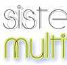
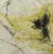
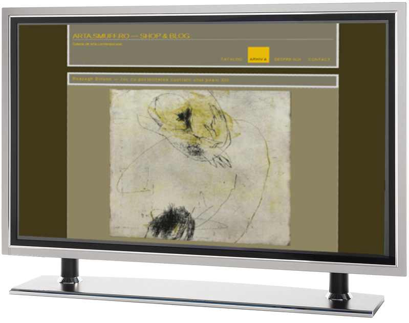
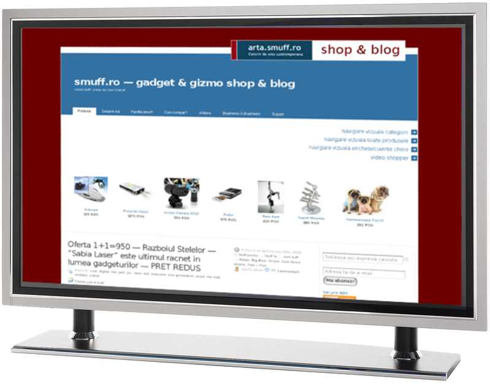
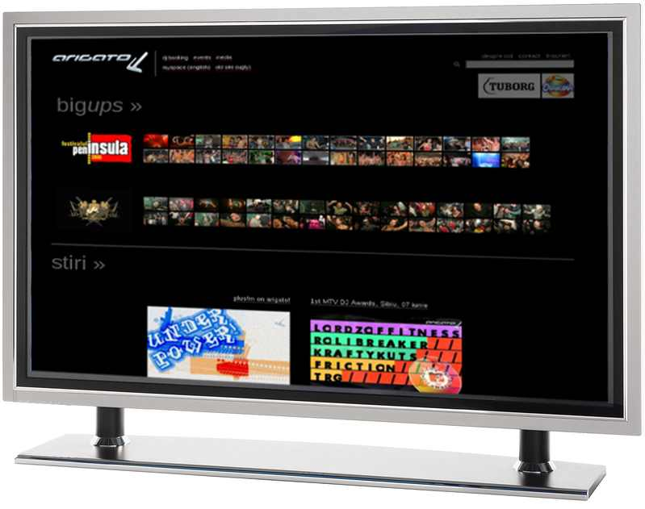
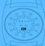
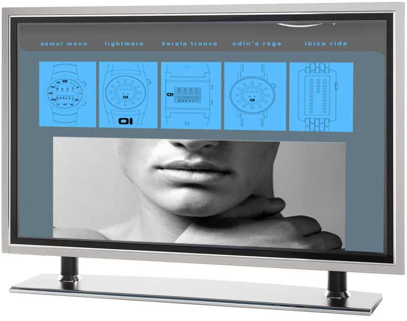
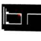
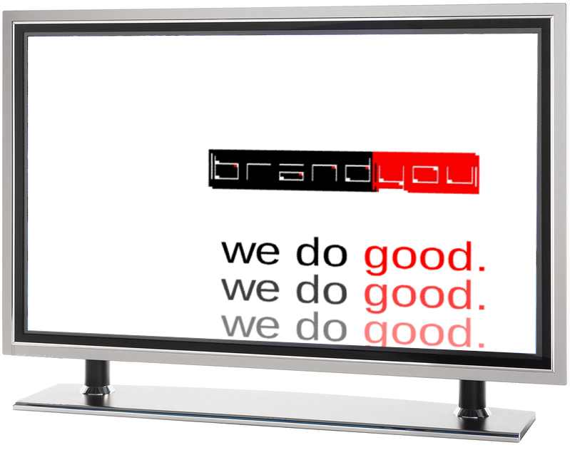

- 
Multitouch Magazine, 2009 - publishing, advertising, comunitate. (sistememultitouch.ro/blog)
- 
Galerie de arta contemporana (2008) - galerie 3d, e-commerce (arta.smuff.ro)

-
smuff.ro - gadget & gizmo shop & blog (2007) - e-commerce, publishing, advertising (www.smuff.ro)

-
arigato.ro (2006) - music mashup, comunitate (www.arigato.ro)

- 
ceasuri-binare.ro (2007) - design in stil web2.0 (ceasuri-binare.ro)

- 
Brandyou (2007) - identitate stil web2.0

-
Tehnologii web2.0 folosite
Componente si technologii web 2.0 folosite
- Motor blog multi utilizator pentru publishing.
- Motoare e-commerce pentru a echipa siteul cu functii de magazin online.
- Tehnologii de comunicare / comunitate: forum, sistem de comentarii, wiki, retele sociale...
- Integrare cu servicii marketing / publicitate web 2.0
- Colaborare cu alte servicii web 2.0
- Module business: Managementul proiectelor, Managementul taskurilor, Managementul timpului, Relatii cu clientii, Vizualizare baze de date
- Hosting gratuit.
Informatii
Siteuri web 2.0
Oferta noastra este prezenta completa web 2.0 in cel mult 2 saptamani.
Solutiile web 2.0 sunt ideale pentru comunicarea cu clientii si sunt efective in promovarea online al produselor si serviciilor.
Dezvoltare aplicatii si servicii web
Va putem oferi sisteme web personalizate, create la comanda intr-un regim de servicii obisnuite.
Fara investitii initiale, numai pe baza unui abonament lunar.
Consultanta
Suntem la zi cu filozofia, trendurile, tehnologiile si aspiratiile lui homo informaticus. Il folosim zilnic la proiectele noastre.
Va putem ajuta in a gasi directia optima, va putem echipa cu tehnologia de ultima ora, si putem construi solutii impreuna.
Singurul nostru obiectiv este de a va oferii